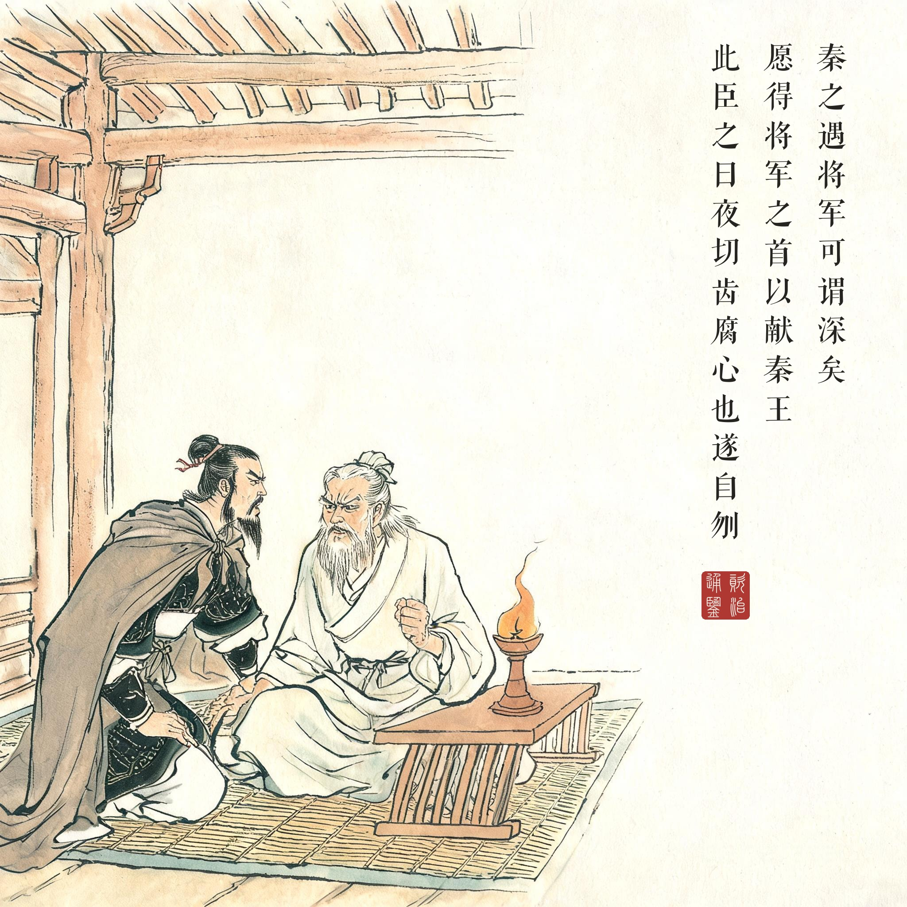
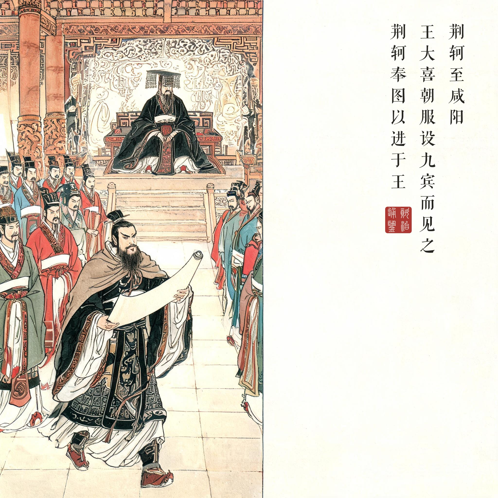
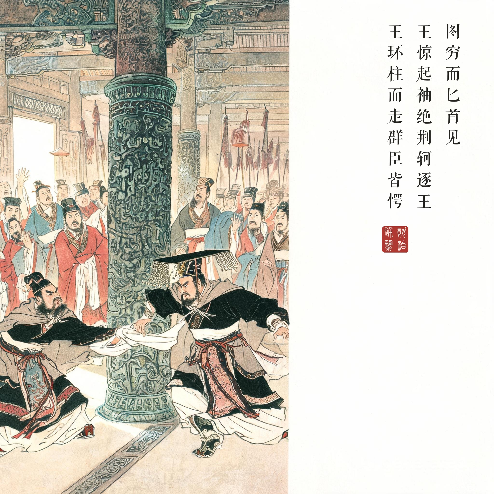
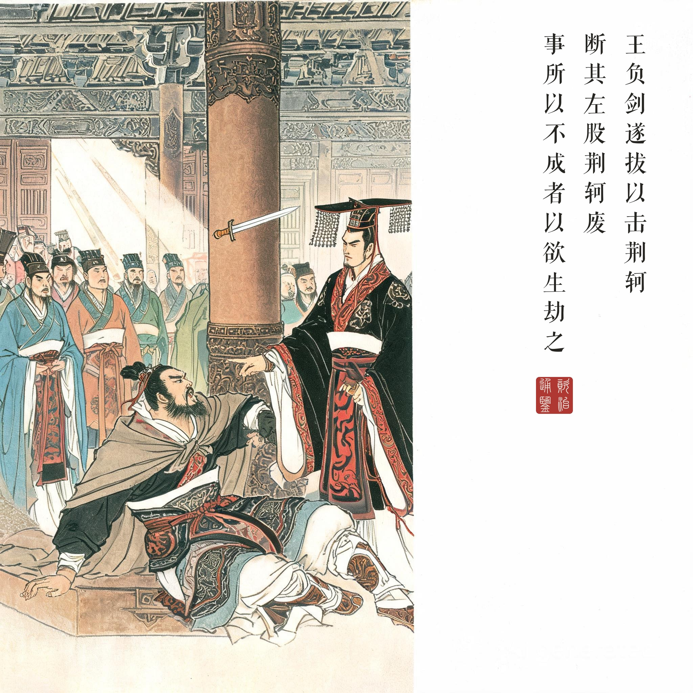

《资治通鉴 · 卷第六 · 秦纪一 / 卷第七 · 秦纪二》始皇帝十九年至二十年（公元前 227 年）
（据 daizhigev20《资治通鉴》底本节录。按：易水送别、白衣击筑为《史记 · 刺客列传》名场面，《通鉴》删而不书，本回四幕皆循《通鉴》原文）
太子闻卫人荆轲之贤，卑辞厚礼而请见之……及王翦灭赵，太子闻之惧，欲遣荆轲行。荆轲曰："今行而无信，则秦未可亲也。诚得樊将军首与燕督亢之地图，奉献秦王，秦王必说见臣，臣乃有以报。"太子曰："樊将军穷困来归丹，丹不忍也！"荆轲乃私见樊於期曰："秦之遇将军，可谓深矣，父母宗族皆为戮没！今闻购将军首，金千斤，邑万家，将奈何？"於期太息流涕曰："计将安出？"荆卿曰："愿得将军之首以献秦王，秦王必喜而见臣，臣左手把其袖，右手揕其胸，则将军之仇报而燕见陵之愧除矣！"樊於期曰："此臣之日夜切齿腐心也！"遂自刎。太子闻之，奔往伏哭，然已无奈何，遂以函盛其首。太子豫求天下之利匕首，使工以药焠之，以试人，血濡缕，人无不立死者。乃装为遣荆轲，以燕勇士秦舞阳为之副，使入秦。
荆轲至咸阳，因王宠臣蒙嘉卑辞以求见，王大喜，朝服，设九宾而见之。荆轲奉图以进于王，图穷而匕首见，因把王袖而揕之；未至身，王惊起，袖绝。荆轲逐王，王环柱而走。群臣皆愕，卒起不意，尽失其度。而秦法，群臣侍殿上者不得操尺寸之兵，左右以手共搏之，且曰："王负剑！"负剑，王遂拔以击荆轲，断其左股。荆轲废，乃引匕首擿王，中铜柱。自知事不就，骂曰："事所以不成者，以欲生劫之，必得约契以报太子也！"遂体解荆轲以徇。王于是大怒，益发兵诣赵，就王翦以伐燕，与燕师、代师战于易水之西，大破之。
太子丹听说卫人荆轲贤能，以谦卑的言辞厚礼相请……等到王翦灭赵，太子恐惧，要送荆轲上路。荆轲说："空手而去没有信物，无法接近秦王。若能得到樊将军的首级和燕国督亢的地图，献给秦王，他一定乐于见我，我才有机会下手。"太子不忍："樊将军穷途末路来投奔我，我不忍心！"荆轲便私下去见樊於期："秦王对将军，可谓狠毒——父母宗族全被杀戮！如今悬赏千金、万家封邑购您首级，您打算怎么办？"於期流泪长叹："计将安出？"荆轲说："愿得将军之首献给秦王，秦王必欣喜召见，臣左手抓住他的衣袖，右手直刺他的胸膛——将军的大仇得报，燕国受辱的耻辱也洗雪了！"樊於期说："这正是我日夜切齿腐心之事！"当即自刎。太子闻讯奔去伏尸痛哭，无可奈何，用匣子盛起他的首级。太子又预先求得天下最锋利的匕首，让工匠以毒药淬炼，试验杀人，只要渗出丝缕血，无不当场毙命。于是打点行装送荆轲入秦，以燕国勇士秦舞阳为副使。
荆轲到咸阳，通过秦王宠臣蒙嘉以卑辞求见。秦王大喜，穿上朝服，设九宾大礼召见。荆轲捧着地图进献，地图展到尽头，匕首显现——他一把抓住秦王衣袖直刺；没等刺到，秦王惊起，衣袖挣断。荆轲追击，秦王绕着柱子奔逃。群臣大惊失色，仓促之间全没了章法；而按秦法，殿上群臣不得携带寸兵，众人只能徒手围搏，齐喊："大王把剑推到背后拔！"秦王负剑拔出，一剑砍断荆轲左腿。荆轲废了，奋力掷出匕首，击中铜柱。他自知大事不成，骂道："我之所以失败，是想活捉你，逼你立约还地好回报太子！"荆轲被肢解示众。秦王大怒，增兵赵地，命王翦攻燕，在易水以西大破燕军。
《通鉴》删掉了什么。司马光没有写易水，没有写"风萧萧兮易水寒"，没有写白衣冠送别与高渐离的筑声——那属于《史记 · 刺客列传》的浪漫。《通鉴》的刺秦只剩两幕硬骨：密室里一场以命相托的对话，大殿上一场猝不及防的追逃。樊於期一句"此臣之日夜切齿腐心也"便是全篇最响的声音——私仇与国难在同一颗头颅上完成了交接。
一场被礼节送进死地的刺杀。朝服、九宾、奉图以进——秦王的仪式越隆重，荆轲就越接近他；但"礼"同时也保护了秦王：秦法殿上群臣不得持兵，于是中国历史留下了最奇特的一幕——满殿君臣，眼看君王绕柱奔逃，人人只能喊话和徒手拦截，最后靠一句技术指令"王负剑"翻盘。剑长匕短，一寸之差，燕国的国运就此封死。
读画小识。第三幕追逐与第四幕倚柱而骂是全回的两极：前者是"未至身"的一瞬间——袖断、惊起、绕柱，画面把时间钉在最悬处；后者荆轲断股倚柱、匕首钉在铜柱火花之间，题款是他最后的骂声"事所以不成者，以欲生劫之"——刺秦失败于"想活捉"，燕太子丹要的是约契，荆轲死前仍替他记着这笔账。